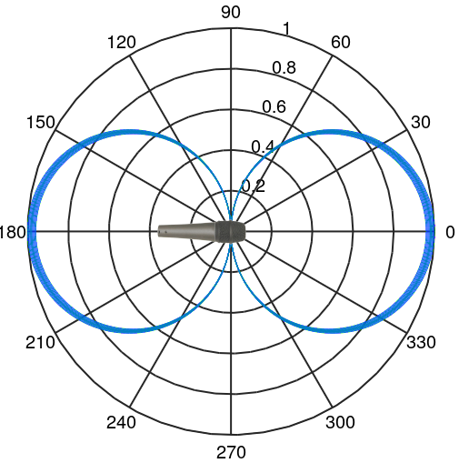
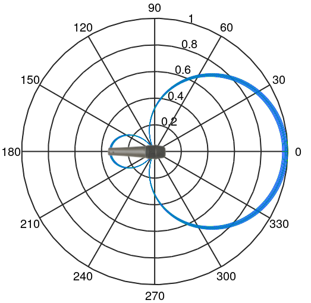
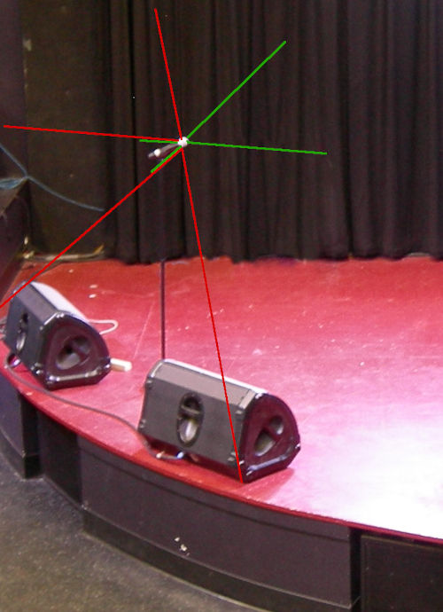

Types of Microphones
On this page there is a section on vocabulary that describes and defines the parts
of a microphone. Having a clear vocabulary helps explain how one microphone differs
from another, and that in turn helps one understand at a fundamental level which
microphone might work better than another in a particular situation. Following
that are three qualities of a microphone that represent a tradeoff. These are the
degree of audio fidelity, the degree of directionality, and the degree of miniaturization.
Generally, you can optimize one of those qualities, but at the the expense of the
others. Finally, there is a discussion of the underlying technology of the
microphone. There are four technologies that one might encounter in house-of-worship
applications. They are the dynamic, the condenser, the ribbon microphone, and the
piezoelectric or crystal technology.
This discussion of microphones is written with house-of-worship applications in
mind. There are many other discussions of types of microphones that have greater
generality. Wikipedia's article on microphones is one example.
Vocabulary
Capsule
All microphones depend on some sort of analog
transducer that converts
the acoustic energy of sound waves into an electrical signal. More often in the
professional audio industry the transducer is called a capsule. But it may
sometimes be called a cap or a cartridge or a microphone element.
It will usually be called a capsule for these web pages. The capsule needs
to be mechanically protected so that the microphone can be handled without damaging
the capsule, and so that the capsule can be properly exposed to sound but screened
from wind and handling noise. This page is all about these capsules and the mechanical
housing and associated parts around the capsule.
Some capsules create more powerful electrical signals than others. Some capsules
create signals strong enough to directly pass through hundreds of feet of microphone
wire before they need any amplification. The most powerful capsules create so-called
microphone-level signals. These are voltage signals of about –40 dBV
down to about –60 dBV. (About 1 to 10 mV peak) That's not really very
strong! Other capsules create even weaker signals. They require a pre-amplifier to
be located adjacent to the capsule (inside the microphone) or within a few feet of
the capsule, say in a bodypack. There a pre-amplifier strengthens the signal to an
optimal level for sending down a cable or for wireless transmission. The pre-amplifier
in or near the microphone creates a so-called "line-level" signal that is even stronger
than a microphone-level signal. Line-level signals are in the range of about +1.8 dBV
down to about –10 dBV, with 0 dBV as nominal. (1228 mV down to 316 mV peak
with 1000 mV as nominal)
It is a little ironic that by the time the signal gets to the mixer board, the capsules
that generate the strongest signals ("mic level") provide the board with the weakest
signals ("mic level") due the absence of a pre-amplifier ahead of the mixer board.
But there is a minor advantage in the absence of a preamplifier. Each amplifier or
preamplifier in the pathway of the signal needs to be properly gain
structured. Improper gain structure causes noise or distortion. Capsules that
require no preamplification—mic-level capsules—avoid a potential gain
structure problem. Sometimes mic level capsules are preferred solely for this advantage.
Capsules that require a pre-amplifier must be properly gain structured. Some preamplifiers
have a switch or knob that can be adjusted to adapt the pre-amplifier to the audio loudness
the capsule is exposed to. Since gain structure is even more critical if a wireless
channel is employed, almost all wireless microphones have gain trim adjustments, which
may be hidden behind a battery door or deep on a menu. Most capsules that require a
preamplifier and are intended to be used in a wired channel have a factory-preset
gain trim which is not adjustable. If the audio loudness is too loud or too soft to
adequately match this pre-set gain trim setting, one has no other choice except to
substitute a different microphone type (different brand or model) that is a better
match to the situation.
Some microphones are available with a selection of different capsules that may be mounted
in or on them. Other microphones include two or more capsules with a switch to select
how the capsules are connected to the electrical output of the microphone. (The "Blue"
brand of microphones has made a sort of specialty of selling microphones with multiple
capsules. The "Blue Yeti" microphone and its variants have multiple capsules built in
and selectable by a switch. The "Blue Bottle" has a selection of optional capsules
than can be attached to the main housing of the microphone. But Blue is not the first
or only company to provide such offerings.) Even if a microphone has only one available
capsule, the capsule is usually a replaceable part if the microphone is carefully
disassembled.
Shock Mount
Most capsules are suspended inside a housing via a shock mount. Sometimes the
shock mount and the capsule are a single indivisible assembly. A shock mount is usually a rubber
assembly with some damping, arranged so that mechanical vibrations from handling
the microphone do not get mechanically coupled into the capsule and mixed with the audio.
Shock mounts can have varying degrees of sophistication or, in the case of inexpensive
microphones, might be rather ineffective or even entirely absent, with the capsule
mechanically fastened directly into the microphone housing.
Windscreen
It is desirable that only sound gets to the capsule, no wind or breath noise. There are
three types of wind-sounds to consider.
1) The ordinary breeze of the day, such as is reported in the weather forecast, needs to
be considered if the microphone is used outdoors. This breeze can cause turbulent air
flow over the capsule, which will create an obnoxious rustling sound. Almost certainly
the microphone's built-in windscreening will need to be supplemented.
2) There is also wind caused by the motion of the microphone. Suppose a microphone is
handheld and the vocalist is not singing, holding the microphone near a thigh in a
relaxed manner. Then the vocalist raises the microphone to sing. This type of motion
is equivalent to a breeze of about 10 to 15 MPH. If the vocalist is dancing or acting
in a theatrical manner this type of breeze can be even greater.
3) There are plosive sounds in
speech and singing. These produce puffs of air that are expelled from the vocalist's mouth but are usually inaudible
in daily life—until a microphone picks them up and emphasizes them. Most
microphones, if they are in just the wrong position, become sensitive to these plosives,
distorting the sound. The area of maximum plosive turbulence is usually about three inches
straight out from the mouth and a half-inch down. Hold the capsule of the microphone
almost anywhere else for a better sound! To mitigate these three sources of wind noise,
most microphones include some windscreening.
Because windscreening can muffle the sound, as if you are listening through a pillow,
windscreening built into a microphone is usually kept to a minimum. Ideally, vocalists
should be trained to avoid putting the microphone in the stream of plosives.
Only enough windscreening is usually provided for use outside the stream of plosives.
Optional external windscreens, often in the form of foam socks that cover the microphone,
sometimes in the form of a mesh disk suspended between the vocalist and the microphone,
can be used to add additional windscreening if desired.
Microphone
For the purpose of this tutorial, a microphone is the assembly of hardware that
consists of the capsule and, if necessary, the pre-amplifier, and the shock mounting,
and the housing around that and the windscreening to ideally allow only sound to reach
the capsule. A microphone might also contain various switches (e.g. on/off).
There will be a separate page in this tutorial on the electrical connection between
the microphone and the mixer board or wireless transmitter or PA amplifier. There
will also be a separate page on handling and using microphones.

Above: A view of the inside of a typical studio microphone.
(AKG model C414 XLS )
Click on the photo for a higher resolution view.
Photo ©2018 by AKG.com, used with permission.
Three qualities that get traded-off
There are three characteristics of microphones that get traded-off. These are:

Above: A visualization of the placement of a microphone in a 3-D space based on
its characteristics.
Any given microphone can be visualized as occupying a place in a three-dimensional
space. As any one of the above gets optimized, it tends to come at the expense of one or
both of the other qualities listed above. For example, if you accept a very large microphone
(zero effort at miniaturization) that is sensitive to sound from all directions (no
directionality), then you can have very high audio fidelity. Or maybe you want a
very directional microphone. You can expect that to be a large and low fidelity
microphone.
As effort is taken to optimize one of these three characteristics, and as the other
characteristics are traded away, the location of the microphone in this classification
system tends to move toward one of the two planes containing the axis being optimized,
or even near the axis itself. Down through the decades microphone designs have gotten
better and there are more options located far from the origin and away from the three planes
of optimization.
1.) Degree of miniaturization (vs. directionality and fidelity)
Actually, this category is more than just about physical size. It is also about
how the microphone can be handled and positioned. In the 1920's microphones were
large conical horns connected to metal pipes to route the acoustic energy to a
diaphragm mounted on a lathe to cut a recording directly with the acoustic energy
collected. It was anything but convenient to use one of these microphones.


Above: Two examples of early acoustic-powered microphones,
circa 1925. (click an image for a larger view)
One fact remains to this day. The essential problem with
miniaturization of a microphone is the declining amount of acoustic energy that can be
collected for conversion. In a studio environment larger and more awkward arrangements
can be accepted. In live-sound reinforcement miniaturization is especially valuable, and
other qualities can be sacrificed. With this type of trade-off in mind, the degree of
miniaturization needed will also be influenced by how the microphone needs to appear
(or disappear) or be mounted in the room. If a microphone is going to be hand-held,
it should not be too small! The degree of miniaturization needed is
influenced by the overall characteristics of the situation. A studio microphone is located in or near the directionality—audio-fidelity
plane. Miniaturization is not needed and normally not much achieved.
A microphone used in a recording studio can require complicated set-up, a controlled
environment (temperature, humidity) and mechanical delicacy. It will be attended to
by a recording engineer, and used by experienced performers, so careful
handling and adroit positioning can be assumed. Windscreens and mechanical
shock-mounting can be dealt with separately from the microphone itself to
assure the best possible results in a variety of situations. Some microphones are designed to be mounted on a stand. They
usually include good mechanical shock-mounting and a wind screen in
one unit to reach for studio-quality with less fuss and set-up time.
A common design to achieve this is the birdcage style. Here
the capsule, shock-mount, and windscreen are protected inside a cage.
The Shure model 55SH is a common example, but many manufacturers make
microphones in this style. These microphones are simply too big to
be conveniently hand-held, so they must be used on a stand. The stand
also allows the sound engineer to position and aim the microphone
carefully, which is an advantage, unless the vocalist starts tipping
the stand around, Elvis-style! A good-quality microphone that is designed to be hand-held but
instead is clipped to a stand can be every bit as useful as a microphone
designed to be mounted on a stand. The main advantage of mounting a
microphone on a stand is that it can be pointed away from loudspeakers
and toward the sound source in a dependable way. A microphone that is
held by a person is likely to be pointed all around the room at various
times.
Installed microphone
Some microphones are permanently fastened to a podium, a desk, or
at a cash register or a bank's drive-up window, or similar location.
Installed microphones used to be preferred (1930's through 1970's) in
house-of-worship applications in order to minimize set-up and take-down
time. In some of these situations the public address system was simply
turned on or turned off. There was no sound operator on duty during worship.
Most houses of worship have now abandoned that concept and many installed
microphones have been removed and replaced with other options. Those
installed microphones that remain might be used only as backup options
or otherwise abandoned. Installed microphones are designed to be always present and ready, requiring
no set-up time and no training to use. They are impossible to misplace
or disconnect because they are bolted down and more-or-less permanently
wired in place. They must be rugged enough to withstand use by ordinary
people, in contrast to microphones used by professional performers.
Installed microphones need good mechanical shock mounting to prevent
noises from the podium or counter-top on which the microphone is placed
from being conducted into the microphone. Installed microphones are usually designed for spoken-word applications
as opposed to music. This usually implies prominent sensitivity
to upper-midrange frequencies where the human voice has a lot of energy.
This makes spoken words easier to understand as compared to uniform
frequency response, even if it is not particularly high-fidelity.
Sometimes, especially in house-of-worship applications, a soloist or
small ensemble of vocalists will perform from a podium with an installed
microphone. If the microphone is not one designed for music, the
results can be a bit on the shrill side. The category of installed microphones also includes microphones that
are suspended from a ceiling to pick up sound in a conference room,
or from a choir, or congregational singing, etc. These microphones do
not need shock mounting, but usually their size should be minimal to
avoid obstructing sight lines in the room. Very often these microphones
have a captive cable, meaning a long cable (say 15 or 20 feet) that is
permanently attached to the microphone. The cable that conducts the
electrical signal is also designed to have the mechanical strength
to suspend the microphone while being as thin as possible for aesthetic
reasons. The category of installed microphones also includes microphones built
into other appliances, such as a laptop computer, cell phone, intercom
system, etc. Once again, quality shock mounting matters. For instance,
on a laptop computer the microphone should not be able to pick up the
sound of the keyboard being used. (But that's a pretty tall order.) Or
the microphone might be built into a helmet or headphone.
Sometimes a microphone that is designed as a hand-held microphone is
clipped to a gooseneck that is permanently fastened to a podium or table-top.
Functionally, this usually works fine, assuming the microphone has a good
internal shock-mount. It can even have superior performance since some
hand-held microphones are higher fidelity than some microphones that are
designed to be installed. Practically however, the microphone can be
easily removed from the clip and disconnected from the cable. Even if
potential theft is not an issue, the microphone might be absent without
leave when it is needed because someone temporarily borrowed it for another
purpose. Also, in this type of installation the microphone
cable is usually visible and subject to additional wear and potential abuse,
as opposed to a cable that is internal to the gooseneck.
Handheld microphones need to be conveniently held; hence the typical
size is about that of an ice-cream cone. Some of them are designed in a
stylish way for use on camera in television work. The size of these
stylish microphones has little to do with basic physics and electronics
and more to do with fashion. A few are more stem-like to appear more
stylish on camera in some situations. There is a small market in
customizing handheld microphones so that they coordinate with clothing,
sets, etc. An inexpensive customization is to fit it with a colorful
windsock. Most voices sound better, with less popping and hissing, if an additional
wind sock is fitted over top of the standard screen on the microphone.
Video: How to hold a microphone.
The person holding the microphone should be instructed to hold it by the
handle and not allow any fingers to touch the wind screen. Fingers and
hands near the capsule block sound. It is counter-intuitive to most people,
but cupping the microphone blocks sound from traveling clear through the
windscreen system, thus creating distortion in the sound. You don't speak through
your nose but pinching off your nose while talking creates an unpleasant
sound! Similarly, blocking the back of a microphone creates a bad sound.
That said, some singers still like to cup the microphone. It can be done
in a way that accentuates mid-pitched sounds, making the vocalist seem
closer to the listener, but usually at great compromise to overall fidelity.
In this video the
speaker is incorrectly holding the microphone from
0:30 to 2:10. At 2:10 he moves his hand and corrects his hold on the
microphone. The improvement in the audio is easily heard if you are
listening with a decent sound system or good headphones. (A tiny smart-phone
speaker might not show difference.) This example is just speech. The
difference with vocal music can be even more obvious, but this is the
example I was able to find. (Just watch from about 1:00 to about 3:00.
This author does not particularly endorse lock-picking! Do you know of
a better example video? Please e-mail me!)
Hand-held microphones fully occupy one hand of the vocalist which
reduces the ability of the vocalist to gesture or manipulate papers. A
vocalist might reflexively gesture or manipulate notes with the hand
that is holding the microphone, resulting in inconsistent sound. Although
most hand-held microphones are directional, the sound operator cannot
depend on this directionality being used to advantage. Unless the person
using the microphone understands well how to use it, the aim of the
microphone can be best controlled by fastening the microphone to a
stand using a microphone clip. This frees the vocalist's
hands and gives the sound engineer an opportunity to aim the microphone
carefully to minimize the pickup of feedback and other undesired sources
and maximize the pickup of the desired source. A handheld microphone is likely to be dropped onto hard floors
now and then. It must be able to survive this. Handheld microphones also
need to have the capsule mechanically-shock-mounted so that handling noise
(picking up and setting down the microphone, handing the microphone from
one person to another, sound from stroking the microphone wire) is minimized.
A handheld microphone usually needs a substantial
wind screen to mitigate the sound of the wind going past the microphone
as it is waved through the air. (For example when a singer lifts the
microphone from near waist height to their mouth to begin singing, the
breeze going past the capsule would be substantial save for the windscreen.)
Windscreens having larger and softer and shaggier surfaces are
more effective. In thinking about where this type of microphone would be in the 3-D space
of miniaturization-directionality-fidelity, the miniaturization is becoming
extreme enough to cause noticeable compromises. This is located quite far from the
origin of the 3-D space but also quite near the miniaturization axis. Lavalier microphones usually compromise the shock mounting and are made
omnidirectional to make the microphone smaller. Directional lavalier microphones
are available; however they are larger and harder to hide in clothing or hair.
If there is a windscreen, it is likely to be only slightly effective due to its
small size. Lavalier microphones are usually clipped to clothing. For live-sound applications (Most house-of-worship applications) the microphone works best
when mounted near the place on the chest where the person's chin touches if the
head is lowered until the chin touches the chest. This is about three inches
higher than the best place for recorded sound work. The place where the chin can
touch gives a stronger signal that is less prone to feedback and needless echo.
In recorded work there is no amplified sound to overcome, so a slightly lower
position can be used to achieve a somewhat more natural tone. Mounting the
microphone too low also increases the risk of stomach rumble being picked up!
No matter how the microphone is mounted, if the speaker turns his or her head
far to either side, the sound level tends to drop. (If you are reading other
literature on the topic of placing a lavalier microphone, pay attention to the
application. Is it live-sound, recorded sound with no video, or video with
audio? Each requires a different optimization.) Lavalier microphones are designed to be mounted to a soft sound-absorbing surface
such as clothing, or even skin (use medical first-aid tape). The sound this close
to such a surface will naturally be a little muffled. To combat this, all lavalier
microphones are designed to boost the higher frequencies so that the
sound they send is normal-sounding. The high-frequency boost is usually created
by the acoustic properties of the capsule's materials, as opposed to using an
electronic filtering circuit. An acoustic boost of high frequencies does not also
boost electronic noise like an electronic filter does. Thus, using a hand-held
microphone on a necklace and using an equalizer to achieve the needed high-frequency
boost, does not perform as well as using a lavalier microphone in the first place. A lavalier microphone with it's built-in acoustic high-frequency boost is well
and good as long as the microphone is used as intended. Occasionally a speaker
will, in an impromptu moment, remove his or her lavalier microphone and hand-hold
it to pick up a guest speaker standing nearby. This always results in a
tinny sound due to the built-in high-frequency emphasis. Also, the microphone
typically has no shock mounting and no wind screen (or only a slightly effective
wind screen). Thus, the results of hand-holding a lavalier microphone are
inevitably poor, with lots of rustling noises, popping sounds, and shrillness. If
the need to offer a microphone to a guest can be anticipated, it would be best to
offer the guest another microphone of any type rather than hand-holding a lavalier
microphone. Also, due to the built in high-frequency sensitivity, a lavalier
microphone is a poor choice for a musical instrument (guitar, violin, etc.). In a house-of-worship application the main advantage of a lavalier microphone
is the freedom of hands and movement that the microphone affords. Almost any other
microphone type will give better quality sound for the money. That goes
double for a lavalier used on a person who is singing, since audio fidelity
matters more then.
The discussion below starts with the largest present-day microphone styles (little
need for miniaturization) and proceeds toward the smallest microphone styles.
Studio-type microphones
These are the characteristics of a studio-type microphone:
Above: A studio microphone for a vocalist. The microphone is
in a separate
mechanical shock mount with an external wind screen.
Photo: Pixabay
Stand mounted
These are the attributes of a stand-mounted microphone:
Above: A typical "birdcage" style microphone.
(Shure model 55S) Photo:
Wikimedia Commons
Above: Sometimes the microphone stand is a stage prop too!
(Elvis Presley, 1956.) Photo: Wikimedia Commons
These are the characteristics of installed microphones:
Above: An installed microphone. The sound of moving drinking
glasses etc.
on the tabletop can be conducted up the gooseneck, thus
good shock mounting
of the capsule in the microphone is needed.
Photo: Wikimedia Commons
Handheld
These are the characteristics of a handheld microphone:

Above: The parts of a typical hand-held microphone. 1. Handle, 2. Shock-mount,
3. Capsule, 4. Pre-amplifier, 5. Internal windscreen 6. External windscreen.
Click on the photo for a higher resolution view.
Photo ©2018 by AKG.com Used by permission.
Figure 7. Stem-style hand-held microphone. (American model D22.)
Oh yeh, the other subject in this photo is Bing Crosby.
Photo: Ampex advertisement from the 1950's, fair use

Figure 8. This sounds terrible. Hold it by the handle instead.
Sometimes people want to sound terrible, but otherwise,
give them some basic instructions.
Photo: Pixabay
Video: Proximity effect and directionality
Lavalier or Lapel-mounted
These are the characteristics of a lavalier microphone:

Above: A well-placed lapel microphone on George Forman.
Photo: Wikimedia Commons
Head-worn
These are the characteristics of a head-worn microphone (also known as a head-set
or ear-set microphone).
Head-worn microphones are the smallest, most miniaturized microphones used for
live-sound reinforcement. The largest are about a half-inch in diameter (which
may look more like one inch in diameter if fitted with a windscreen) and the
smallest are about the size of a grain of rice. The most desirable ones for
use in most house-of-worship applications are the size of a pea or smaller.
Such small microphones are usually omnidirectional. They also might not have
the best audio fidelity, but for voice reinforcement in a live-sound environment
they are usually an excellent overall compromise. They are placed so close to
the sound source that directionality usually is not needed, and they can be
designed to give good audio fidelity if the design is optimized for the
human voice.
{kind=link}
{kind=link}
{kind=link}
{kind=link}
.jpg){kind=link}

Above: Garth Brooks wears a Crown CM331A head-worn microphone.
Wikimedia Commons
.jpg){kind=link}
One of the primary advantages of a head-worn microphone is that it moves
with the speaker's head and maintains a very constant distance to the source
of the sound. Another advantage is that although the microphone is in plain sight,
the smallest of them are small enough to disappear from view at a distance or on video
if they are worn properly. To this end, most of the small models are available in
a variety of colors to match different skin tones. Also, to the end of allowing
the microphone to disappear from view, the microphone can be worn in such a style
as to allow natural shadow lines along the jaw to camouflage the microphone. To make such
camouflage effective the microphone must lay on or very close to the skin
(within 1/4 inch or less). Otherwise shadows and highlights from ordinary
lighting give the microphone away, even accentuating its visibility.
Sometimes a head-worn microphone is used mainly to fight feedback. If this is
the case, the best place to locate the microphone capsule is about 1/2 inch
back from a smile and in line with the speaker's lips.


Above: George Washington Carver and George Washington are
each wearing a head-worn microphone in the ideal location for
picking up the maximum signal practical, thus giving the
maximum gain possible before feedback sets in.
Wikimedia Commons
and Wikimedia Commons
(both marked up)
{kind=link}
{kind=link}
Usually maximization of gain-before-feedback is not needed. Furthermore, head-worn microphones are typically extremely sensitive to plosives. If the microphone is any closer to the lips than is shown above then distortion of plosives becomes a possibility. Usually, it is best to position the microphone to achieve more camouflage by mounting it more closely aligned with the lower jaw. There is a natural shadow-line on the front of the jaw. If the microphone is located as if to extend this shadow-line all the way back to underneath the earlobe, the eye of the viewer will overlook the microphone. If a shirt is worn with an open collar, be sure the microphone is not so low on the jaw as to possibly rub on the collar. Even at this location, the microphone is just a few inches from the speaker's mouth and a good strong signal is available.
Above: George Washington Carver and George Washington are
each wearing a head-worn microphone in the ideal location to
camouflage it, giving the microphone the least visibility.
Wikimedia Commons
and Wikimedia Commons
(both marked up)
Sometimes the speaker has difficulty getting the microphone to fit well. In this case the mic may hang in mid-air an inch or more from the speaker's face. Distance between the mic and the face causes the microphone to become distractingly visible against the background. Ideally the sound technician should work with the speaker to get the microphone placed well so that the speaker is comfortable with the microphone and does not have to fiddle with it during the worship service and so that the microphone is mounted optimally for the needs of the situation.


Above: George Washington Carver and George Washington have
been given no help from the sound tech. Although this location
for the microphone seems intuitive, it optimizes nothing.
Wikimedia Commons
and Wikimedia Commons
(both marked up)
If you have a choice of colors for the microphone, choosing a color that is
slightly darker than the speaker's face will disguise the microphone better
than choosing a color that is slightly too light. This works best because
the lighting on the podium will typically cause a few spots of glare or
specular reflection from the microphone. A slightly darker color will offset
the glare and give a better overall color match.

Above: Head-worn microphones are often available in a variety of colors.
Product photo, MM-PSM Pro Series, fair use.
{kind=link}
Head-worn microphones tend to be fragile. To make them small and
nearly invisible the boom of the microphone and all the other parts are made of
the thinnest possible materials. Whereas a handheld microphone might have a
useful life of twenty years or more, most head-worn microphones seem to have a
useful life of less than three years. They are nearly a "consumable" quantity.
When budgeting for a head-worn microphone, plan on purchasing and keeping on hand
a spare microphone. The day will inevitably come when you need to make a fast
replacement.
Three factors that are unique to head-worn microphones contribute to their fragility.
1.) They get bent. To provide a comfortable and effective fit it is
necessary to bend the boom and ear-loops of the microphone. Eventually the metals
fatigue and crack and then the microphone will need to be replaced. 2.) The wire
gets flexed a lot. The wire that leads from the microphone also gets bent with every
turn of the speaker's head. Considering also that the wire has been made as thin as
possible, this wire has a limited lifespan. (Some head-worn microphones come
with different options for the wire, a thin option for invisibility and a thicker
option for durability.) 3.) The capsule of a head-worn microphone is unusually
vulnerable to any dirt that might enter the front of the microphone. Especially if the
microphone is used in an environment where food may be present there is the possibility
that the microphone will be handled by fingers that have food residue on them. This
residue can be accidentally introduced into the front of the mic. Once dirt enters,
it muffles the signal. This type of dirt is difficult to clean out. Some microphones
have specific instructions for cleaning, usually involving rinsing with distilled or
deionized water and drying under specific conditions. But these procedures do not
always work. Some dirt is insoluble.
The wire that leads from the head-worn microphone to the bodypack tends to pull the
microphone out of position. To prevent this, a clip should be used to fasten the
wire to some clothing. There should be a enough of a loop of wire between the
head-worn mic and the clip to accommodate normal movement of the head. It is best to
manipulate the clip to face the wire exiting the clip away from the side of the
head where the microphone is located. This causes the loop of wire to fall on
the person's back. If the wire is faced the other way the loop has an unsightly
tendency to fall over the person's shoulder instead.
Above: The wire leading to the microphone should be clipped to clothing.
As the wire exits the clip on its way to the mic it should face away from the
microphone so that the loop of wire falls on the center of the person's back.
Pexels stock photo marked up
Jewelry, especially earrings, can occasionally rattle against a head-worn mic
causing considerable noise and distraction in the signal. In certain cases it
may be better to resort to a lavalier or stand-mounted microphone.
This ends the discussion of miniaturization of microphones. In order from
largest to smallest, studio, stand-mounted, installed, handheld, lavalier,
and head-worn microphones have been discussed. The smaller the microphone is,
the harder it is to make it directional and high-fidelity.
2.) Directionality (vs. miniaturization and fidelity)
It is relatively easy to make a microphone that is not at all sensitive to the
direction of the sound as the sound approaches the microphone. As the sensitivity
of the microphone to the direction of the approach of the sound waves is increased
the microphone becomes increasingly difficult to miniaturize and it becomes more
difficult to maintain high-fidelity audio reproduction.
A microphone that is completely insensitive to directionality is said to be
omnidirectional. The next step in increasing the directionality of the
microphone results more in a microphone that rejects sounds from the back.
This type of microphone accepts sounds from lots of directions, except
directly from the back side, from which it is designed to reject sound.
This type is called cardioid. The next step of increased directionality
has a goal of narrowing the angle of acceptance of sound as a higher priority than
rejecting sound from the back of the microphone. This is a super-cardioid,
also known as an hyper-cardioid microphone. Making the microphone narrow
the pick-up angle from the front causes it to mostly reject sound from the sides.
In fact, it will pick up equally well from the front and from the back, but not
at all from the side. This is a bi-directional microphone,
also known as a figure 8 microphone. Finally, microphones that reject sounds
from almost all angles including from the rear and accepts only sounds in a narrow
range of angles from directly on-axis are called shotgun microphones.
Shotgun microphones will tend to be the largest and lowest-fidelity microphones
whereas omnidirectional microphones will be the easiest to miniaturize and will
tend to deliver the highest-fidelity.
Before explaining each of the different types of directional microphones it is
helpful to understand how the direction of a sound wave is evident to a microphone.
Sound waves are longitudinal waves. They are created by the motion of air molecules.
In the illustrations below each black dot represents an air molecule. Sound causes
these molecules to vibrate in a pattern that creates compression zones (a higher
density of molecules) and rarefaction zones (lower density of air molecules) that
form in lines. These lines move in a continuous direction—the direction in
which the sound is traveling. In the caption below the first illustration there is a link
to a web page that includes an animation of the illustration below. The animation
is valuable for visualizing how sound moves through air in a particular direction.
The first illustration below is valid for a source of sound far away, say three feet or
more away. The second illustration shows how the lines of compression and rarefaction
in a sound wave are curved and spherical and that they get weaker as they expand outward.
Whereas the groupings of compression and rarefaction move
outward from the source, the air molecules just bounce back-and-forth for an ordinary
sound wave. This can be most clearly seen in the animated illustration linked below.
Not illustrated here is a plosive soundwave, in which there is a
sudden addition of air molecules at the source creating a puff of wind in addition
to the longitudinal waves. Pronunciation of letters p, b, t and some others create
some plosive sound as well as longitudinal sound.
Above: A visualization of sound in air. Please check out the
animation of the above illustration.
Above: A visualization of sound in air close to the source.
Longitudinal waves have a spherical shape close to the source and their
intensity
fades as they radiate outward.
Pixabay (edited).
These characteristics of how sound travels through air are important in understanding
how microphones are made directional and how to make best use of directional
microphones.
Omnidirectional
- All directional, rather "musical" to most ears.
- Resistant to wind noise and plosives in speech
- Simple construction leads to high-accuracy sound pick-up
- Keep omnis close to sound sources in live-sound applications, else feedback.
At any single point in the sound field there is only a pressure difference between the compressed areas and the rarefied areas. As these areas pass over a single point a signal representing the pressure changes can be derived. The direction in which the sound is traveling does not matter
Above: The arrow shows the direction of sound waves.
The blue box represents an omnidirectional microphone. The small portion
at the top senses the pressure at that point.
Illustration by Prof. dDB.
Above: The direction of the sound does not matter. Even if the
direction was completely reversed, or turned to any angle, the pressure
changes at the sensitive point of the microphone are equally easily sensed.
Illustration by Prof. dDB.
Omnidirectional microphones are somewhat insensitive to wind noise (e.g. outdoors)
and plosives from "p," "b," "s," and "t" sounds. This is because wind (air velocity)
does not correspond directly to waves of pressure or rarefaction. This is an
important advantage of omnidirectional microphones. Wind rushing over the housing
of the microphone can produce turbulence that can create some pressure-waves thus
inducing some wind noise, so wind screening is still appropriate in many situations,
but in general, omnidirectional microphones resist wind noise better than directional
microphones.
The directional pattern of a microphone can be expressed as a polar plot of gain
relative to on-axis gain. In the plot below, the "0" degree mark (where 3 o'clock
would be on an analog clock face) represents the ability of the microphone to
pick up sounds on-axis. (The ability to pick up sounds with the microphone pointed
directly at the sound.) On all polar patterns, this has a unit of "1" or 100%,
meaning that for sounds approaching the microphone from this angle (zero degrees)
relative to the axis, 100% or 1.0 units of the sound will be picked up. For an
omnidirectional microphone the plot is uninteresting because, as the heavy (blue)
line indicates, the microphone picks up 100% of the sound when it arrives at any
angle. The plot is shown here mainly for comparison to the plots for directional
microphones.
Above: The ideal omnidirectional pattern. The numbers around the outside of the
plot show the angle, in degrees, from which a sound may arrive. The numbers between
0 and 1 on the radius to the right of 90 degrees label the fractional amount of sound
that might be picked up relative to an on-axis arrival. If you multiply this number
by 100 you get the percentage of sound that might be picked up relative to an on-axis
arrival. The heavy (blue) circle around the outside indicates that an omnidirectional
microphone picks up sound equally well from any angle.
Illustration by Prof. dDB.
Most omnidirectional microphones have a directional pattern very close to the ideal pattern shown above for frequencies below 5 kHz. Considering that the highest note on a piano is about 4 kHz, this covers all the fundamental frequencies and even some harmonics of voices and most musical instruments. However not everything is so perfect. Most omnidirectional microphones, especially those in larger housings, show some slight lack of sensitivity from the rear as frequencies go above 5 kHz. This will matter mostly for miking high-frequency instruments such as a piccolo or cymbals, tambourines, etc. The plot below shows a pattern that is more typical of an actual omnidirectional microphone at about 8 kHz.
Above: An achievable practical omnidirectional pattern for high frequencies.
This plot could be typical of 8 kHz sounds. The numbers around the outside of
the plot show the angle, in degrees, from which a sound may arrive. The numbers
between 0 and 1 on the radius to the right of 90 degrees label the fractional
amount of sound picked up relative to an on-axis arrival. The heavy
(blue) nearly circular line indicates that a practical omnidirectional
microphone picks up a little less high-frequency sound from the rear.
Illustration by Prof. dDB.
The slight directional effect of omnidirectional microphones is usually so minimal
as to be negligible for all except a few applications, and even then, omnidirectional
microphones handle off-axis sounds with less distortion than any directional microphone.
For acoustic instruments on a quiet stage (no other nearby competing instruments or
voices) omnidirectional microphones typically produce especially pleasing results
relative to equally expensive directional microphones. But those are some seriously
restrictive qualifiers in most live-sound environments. Omnidirectional microphones
are more common in a studio environment for recorded sound. Omnidirectional microphones
in live-sound applications are mostly limited to lavalier and ear-set microphones where
their ability to be miniaturized matters.
Omnidirectional microphones are also inherently superior to directional microphones of
equivalent cost when uniformly accurate and smooth high-fidelity low-frequency response
is needed. Pianos (the low notes extend down to 27 Hz), Pipe organs (some go down to 16 Hz),
bass violins, contrabassoons, and electric bass cabinets can sometimes benefit from using
an omnidirectional microphone because of the inherent low-frequency advantage of this
design. Not all omnidirectional microphones achieve such excellent low-frequency
response, so be sure to check the datasheet before purchasing. However due to feedback
concerns in live-sound, omnidirectional microphones are not a common choice, even when
good low-frequency response is helpful.
If omnidirectional microphones are used in live-sound reinforcement their ability to
pick up sound from all angles means they are more open to picking up feedback. This is
a serious strike against the routine use of omnidirectional microphones in live-sound
reinforcement. This disadvantage may be overcome by keeping the microphone very close
to the sound source, which is exactly what ear-set and lavalier microphones do. (Also,
whenever possible keep the mic behind the loudspeaker so that the directional pattern
of the loudspeaker directs amplified sound away from the microphone.)
Within the category of omnidirectional microphones there is a category of microphones
called "measurement" microphones or "reference" microphones. These use standard XLR
connections and look like any microphone, and superficially they act like any
microphone. But they are optimized for use with spectrum analyzers for scientific
laboratory work, not audio mixing boards. It is not impossible to use this type of
microphone in a house-of-worship application, but it is unlikely to be your best choice
for the money in this application. Many of them have restricted dynamic range. They
overload easily and they might have higher background noise than a normal microphone.
What they do have is ultra-flat frequency response. It is usually best not to order
one of these for live-sound reinforcement.
Figure-of-eight
- Bi-directional. Rejects sounds from the sides.
- Especially sensitive to wind noise and plosives in speech
- Strong proximity effect.
Above: The arrow shows the direction of sound waves.
The blue area represents the capsule of a figure-of-eight microphone.
As the air-molecules move against the diaphragm (thin red line) the
diaphragm follows their motion, creating a signal.
Illustration by Prof. dDB.

Above: The direction of the sound matters. If the sound arrives
perpendicular to the axis of the capsule, as shown, then it creates no
motion of the diaphragm, and there is no signal.
Illustration by Prof. dDB.
Directional microphones, and especially Figure-of-eight microphones
are sensitive to wind and especially the turbulence of any breeze that
might flow past the capsule. This makes them especially sensitive to
plosives such as "b," "p,", "s," and "t" in speech. These microphones
will emphasize these sounds if the microphone is close enough to the
source. The effect starts to become noticeable within a foot or so
of the person speaking and can become obnoxious if the microphone is
very close and has no windscreen. For speech and vocal reinforcement
wind screening becomes essential with these microphones.
The directional pattern of a figure-of-eight microphone is shown below.
Notice that the sound is equally well received from the rear as well
as from the front, but at an angle perpendicular to the axis the microphone
is totally insensitive.

Above: The ideal figure-of-eight pattern. The numbers around the outside of the
plot show the angle, in degrees, from which a sound may arrive. The numbers between
0 and 1 on the radius to the right of 90 degrees label the fractional amount of sound
that might be picked up relative to an on-axis arrival. If you multiply this number
by 100 you get the percentage of sound that might be picked up relative to an on-axis
arrival. Maximum rejection of sound is at angles perpendicular to the axis of
the microphone.
Illustration by Prof. dDB.
Figure-of-eight microphones are essentially sensitive to the velocity of the moving
air molecules in a longitudinal sound wave. In contrast, an omnidirectional
microphone is essentially sensitive to the pressure variations (density of air
molecules) in a sound wave. Recall the animation
which shows the two different aspects of a longitudinal sound wave. In this
animation a figure-of-eight microphone is sensitive to the motion of the "particle"
and an omnidirectional microphone is sensitive to the "wave." Thus, an
omnidirectional microphone is said to be responsive to pressure and a
figure-of-eight microphone is sensitive to velocity. (Velocity sensitivity
is also known as pressure gradient sensitivity. Mathematically, a gradient
is a directional derivative. Velocity is the gradient of position. For sound in
air, a pressure gradient is proportional to the velocity of air molecules.)
Figure-of-eight microphones, when placed very close to a source of sound (usually
within one foot or closer) give exaggerated bass (low frequency) response. This is called
the proximity effect. It is caused by the curvature of the sound waves
near the source. As the waves radiate outward from the source the circumference of each
wave-front increases resulting in weaker pressure gradients (weaker sound) being
associated with the further wavefronts. Moving a microphone from one inch away
from a source to four inches away, a motion of three inches, makes a big difference
in the strength of the sound at the microphone. However if the microphone is moved
from thirty-one inches to thirty-four inches away—an identical three inch
movement— there is hardly any difference in the strength of the sound at the
microphone because the waves at those greater distances are hardly curved at all.
In a figure-of-eight microphone this is very close to the source of sound, the sound
at the side opposite of the sound source, say the rear side of the microphone, is
just a little bit weaker than the sound at the front because the back side of the
microphone is just a little further from the source then the front side of the microphone.
(Or the sound has to travel just a little further to get to the back side of the
diaphragm of the capsule.) Some of this difference depends on the size and geometry
of the microphone capsule, the diaphragm, and the structural elements (which may block
some sound waves) required to support the diaphragm. This means that some microphones
have larger proximity effects for a given distance to the sound-source than others.
In a counterintuitive way, weaker sound at the back of the diaphragm reduces the
overall sensitivity of the diaphragm. However, as the frequency of the sound
gets lower its wavelength gets longer which means that the distance the waves have
to travel is less important. Thus, lower frequency sounds get picked up better
than higher-frequency sounds when the sound waves are curved, as they are near
the source.
Proximity effect is inherent in any velocity-sensitive microphone.
Fundamentally, some proximity effect will always be inherent to achieving directionality.
Although in a technical sense the proximity effect is distortion, most people find
that a small or moderate amount of it sounds pleasing, adding a sensation of closeness
or authority. This is true for both male and female voices. The lack of proximity
effect in omnidirectional microphones is one reason why they are not so frequently used
for speech and vocals. However for musical instruments the proximity effect can sometimes
be obnoxious, causing certain low notes to ring out obtrusively. If directional microphones
are used for musical instruments that have low notes, e.g. piano, cello, bass violine, etc.
it is important to keep the microphone at least several inches from the sound-producing
parts of the instrument, such as the sound-board or the strings. (Unless you are
deliberately trying for a honky kind of sound, say for a special effect.)
Of all the directional microphone designs, figure-of-eight microphones display the
strongest proximity effects. Only omnidirectional microphones are completely free
of the proximity effect because they sample the sound at a single point. Click here
for a . (Headphones or earbuds with good low-frequency
response will help you hear the demonstration accurately.) One may also note that
directional microphones eliminate most room resonances from the sound, mainly because
room resonances arrive from all directions, making an omnidirectional microphone
especially sensitive to them.
Figure-of-eight microphones are essentially sensitive to the velocity of the moving
air molecules in a longitudinal sound wave. In contrast, an omnidirectional
microphone is essentially sensitive to the pressure variations (density of air
molecules) in a sound wave. Recall the animation
which shows the two different aspects of a longitudinal sound wave. In this
animation a figure-of-eight microphone is sensitive to the motion of the "particle"
and an omnidirectional microphone is sensitive to the "wave." Thus, an
omnidirectional microphone is said to be responsive to pressure and a
figure-of-eight microphone is sensitive to velocity. (Velocity sensitivity
is also known as pressure gradient sensitivity.)
An equation can be used to describe the directionality of a microphone. In the
equation below, θ is the angle of arrival of the sound. If θ = 0 then
the sound is arriving on axis, directly into the front of the microphone.
If θ = 90° then the sound is arriving at a perpendicular angle directly
into the side of the microphone. And if θ = 180° then the sound is
arriving directly from the rear of the microphone. Also in this equation the
variable d represents the directionality of the microphone. The variable
d can range from zero to unity. If d = 0 then the microphone is
not directional, it is omnidirectional. If d = 1 then the microphone is
fully directional, it is a figure-of-eight microphone. Finally, S(θ)
represents the amount of sensitivity of the microphone at angle θ. The
sensitivity, S(θ) will always be 1 (or 100%) for θ = 0.
At other angles it can vary from 1 down to 0, zero being completely insensitive.
S(θ) = |(1 – d) + dcos(θ)|
The above equation is the equation that was used to generate the figures illustrating
the directionality of omnidirectional (d = 0) and figure-of-eight
(d = 1) microphones. But the directionality amount, d does not
have to be exactly zero (0) or exactly unity (1). It can be any amount in
between those limits. This equation nicely illustrates that omnidirectional
microphones and figure-of-eight microphones represent two extremes of a continuum.
Other patters such as cardioid, and super-cardioid, are achieved with different
directionality factors, d.
Cardioid
- Easily understood pickup pattern—picks up from front, rejects from back.
- Can help reduce feedback problems
- Pleasant and mild proximity effect
- Sounds entering from the rear or sides can be distorted.
Above: The ideal cardioid pattern. The numbers around the outside of the
plot show the angle, in degrees, from which a sound may arrive. The numbers between
0 and 1 on the radius to the right of 90 degrees label the fractional amount of sound
that might be picked up relative to an on-axis arrival. If you multiply this number
by 100 you get the percentage of sound that might be picked up relative to an on-axis
arrival. Maximum rejection of sound is at an angle of 180°, the rearward
direction of the microphone.
Illustration by Prof. dDB.
A cardioid pattern is usually created by partially occluding the back side of the
diaphragm of the cartridge. The phase between the velocity and the pressure
is offset from each other by 90 degrees. With a partial occlusion the pressure
in the chamber behind the diaphragm can delayed an additional 90 degrees causing
the two effects to reinforce each other when the sound arrives from the front.
However, if the sound arrives from the back the phase of the velocity wave is
delayed relative to the pressure wave and now the two effects cancel. The partial
occlusion is referred to by manufacturers as a port or a labyrinth
or as a baffle or as a pad or possibly with other language. In
other words, the word is not standardized.
Above: The arrow shows the direction of sound waves.
The blue area represents the capsule of a cardiod microphone.
As the air-molecules move against the diaphragm (thin red line) the
diaphragm follows their motion, creating a signal.
Illustration by Prof. dDB.
Above: The direction of the sound matters. If the sound arrives
from the rear of the capsule, as shown, then just enough of it passes
through the occlusion to cause the diaphragm to experience no net force.
Then there is no signal.
Illustration by Prof. dDB.
It is difficult to cause the partial occlusion to operate uniformly at all
frequencies. This causes the directional pattern to vary with frequency.
This variation is the main disadvantage of a cardioid microphone. The
directional pattern is optimized for mid frequencies. Most cardioid microphones
have a good uniform cardioid pattern across a range from about 300 Hz to 5 kHz.
However very high or very low frequencies may have more of an omnidirectional
(typical of lower frequencies) or a figure-of-eight pattern (typical of higher
frequencies). This means that most cardioid microphones are a little more
directional at high frequencies than at low frequencies.
Above: A typical practical cardioid pattern. Each line represents the
pattern at a different frequency. Generally, the patterns that are more
toward the inside of the concentric pattern correspond to higher frequencies
and the patterns on the outside correspond to lower frequencies.
Illustration by Prof. dDB. The frequency sensitivity
of the Shure SM-58 cardioid microphone can be seen by clicking the next link
and scrolling about 3/4 of the way down the page to the "Typical Polar Pattern."
The sensitivity of the microphone's frequency response to direction means that
sounds picked up from the sides (especially) or the rear of the microphone
usually are not very high-fidelity. In the above plot notice that the pattern-lines
are fairly near each other and orderly (this is good) for angles up to about
60 degrees off-axis, but for angles more than about 120 degrees off-axis (up
to 180 degrees off-axis) the pattern gets further separated and some even
cross over the others (near angles around 150 degrees). These widely separated
and crossing lines will result in bad sound. As the microphone is turned away from
the source, before the sound fades it also starts to sound hollow and
distorted, especially for sounds coming in from the back of the microphone.
This dependency of the directional pattern on frequency is the
most serious disadvantage of a cardioid microphone. This video on
Directionality and
Proximity Effect will allow you to hear the hollow and distorted sound
that is picked up when the microphone is not aimed at the source of sound.
Listen with good headphones or earbuds at 1:35 to 1:45. Especially listen to
the sound of the actor's voice saying, "and I'm trying to maintain." In this
phrase, while the microphone is not quite pointed directly away from the
source of sound, the distortion is strong.
A minor disadvantage of a cardioid microphone is that it is more difficult to
miniaturize because the rear-ports (which give it directionality) need some
physical separation from the front of the microphone. But for a handheld or
stand-mounted microphone miniaturization is not needed, so this disadvantage
does not matter.
A third disadvantage of a cardioid microphone is that it is intrinsically a bit
more sensititive to plosives than an omnidirectional microphone, but it is not
as sensitive as a figure-of-eight microphone. Good wind screening can mitigate
this problem, but again at the expense of the size of the microphone since
good wind screening requires some space. Generally wind screening of a cardioid
microphone is only more important than for an omnidirectional microphone, but
not very hard to achieve.
The advantages of a cardioid microphone are several, but probably the main
advantage is that this microphone pattern just does what people naturally
expect a microphone to do. It picks up sound when it is aimed at the source
and not when it is aimed away from the source. All other microphone patterns
are harder for the general public to understand.
When it comes to preventing feedback, a cardioid microphone has a strong
advantage. If the loudspeaker(s) are placed in front of the sound sources they
are aimed away from the microphones, but with a cardioid microphone, then the
microphone is also aimed away from the loudspeaker(s). This arrangement generally
provides very good gain-before-feedback. Also, if stage monitors (loudspeakers on the
floor aimed back at vocalists, guitarists, etc.) are used, cardioid microphones
can be aimed to avoid feedback from the monitor loudspeakers.
Another advantage is that the proximity effect, so strong in figure-of-eight
microphones, is moderated in a cardioid pattern. This moderate proximity effect
is usually more pleasing than a strong proximity effect, and again, the general
public seems to naturally prefer about the amount of proximity effect that
a cardioid microphone typically has.
The very strong advantages of a cardioid microphone in a house-of-worship
application cause its disadvantages (distortion of off-axis sounds, difficult
to miniaturize) to seem minor or even negligible. For this reason most
houses-of-worship use cardioid microphones almost exclusively except for
a few niche situations (primarily lavalier and ear-set microphones that
need miniaturization). All the microphones at Covenant church are
cardioid except the pastor's ear-set microphone (which is omnidirectional).
Super cardioid
- Picks up from directly in front, rejects from about 120°, some rear sensitivity.
- Can help reduce feedback problems when floor-wedge monitors are used.
- Proximity effect can be fairly strong
- Sounds entering from the rear or sides can be distorted.

Above: The ideal super cardioid pattern. The numbers around the outside of the
plot show the angle, in degrees, from which a sound may arrive. The numbers between
0 and 1 on the radius to the right of 90 degrees label the fractional amount of sound
that might be picked up relative to an on-axis arrival. If you multiply this number
by 100 you get the percentage of sound that might be picked up relative to an on-axis
arrival. Maximum rejection of sound is at an angle of 120°. There is some pickup
of sounds arriving from the direct rearward end the microphone.
Illustration by Prof. dDB.
An exemplary application of a super cardioid microphone is a vocal microphone with a floor-wedge monitor speaker near the base of the microphone stand. There are two reasons why it is important to arrange the monitor speaker and microphone so that the microphone can reject the sound arriving from the monitor speaker. First, sound arriving from the rear of any microphone except an omnidirectional microphone is likely to be distorted and hollow-sounding to the extent that the microphone picks it up. Secondly, if there is enough pickup from the monitor speaker feedback howl will ensue. In most cases a cardioid microphone can do an adequate job of rejecting sounds from floor-wedge monitors if the monitors are set five or six feet beyond the microphone stand toward the congregation. However if the monitor can be brought closer to the vocalist it will not have to be driven as hard to make it adequately loud at the vocalist's ears. But as the monitor is moved closer to the microphone the angle of sound arrival encourages more sound to be picked up if a cardioid microphone is used. In contrast, if a super-cardioid microphone is used, then the monitor can be moved into a position closer to the angle of maximum rejection from the microphone. In a case such as illustrated below where the monitor speakers need to be close to the base of the microphone stand then a super cardioid microphone will be a better choice than a cardioid microphone.

Above: A super cardioid microphone is used along with floor-wedge monitors.
The green lines illustrate the approximate angles of sensitivity. The red
lines illustrate the approximate angles of rejection. The monitors are placed
relative to the microphone to achieve strong rejection.
Wikimedia Commons (modified).
{kind=link}
The reader might wonder why a super cardioid pattern is not generally better than
a cardioid pattern for house-of-worship situations. The philosophical answer is that
you should never expect a free lunch. Super cardioid microphones come with a set of
issues that are hard to work with. The angle of high-fidelity acceptance is usually
so narrow that most vocalists will not be able to completely stay within that desirable
angle, especially if the microphone is hand-held. The result will be that the tonal
quality of the sound will vary as the performer moves around. Additionally, the
proximity effect is usually more pronounced, giving the microphone a heavy sort of tone
whenever it is close to the sound source. In this video at 3:30 to
about 4:00 you can hear the typical sound of a super cardioid microphone including the
strong proximity effect and a slight variation in tonal quality as the microphone is
moved around. A performer using a super cardioid microphone needs to be aware of these
difficulties and needs to stay properly positioned relative to the microphone to get
good results.
Overall, for house-of-worship situations a super cardioid microphone may on occasion be
used to advantage, especially with regard to the use of floor-wedge monitors, but
in most situations a cardioid microphone will give more optimal results overall.
A microphone that is similar to a super cardioid is a hyper cardioid microphone.
One must really consult the manufacturer's specifications to see how far the cardioid
pattern has been compromised over toward that of a figure-of-eight since there is
no official standard for the pickup pattern of these microphones, but usually "hyper"
signifies that the microphone is closer to a figure-of-eight microphone with an angle
of maximum rejection of perhaps 100° to 110° whereas a super-cardioid microphone
is usually about a 33-67 compromise between a cardioid and a figure-of-eight pattern with
a maximum rejection angle of about 120°
Shotgun Microphones
More will be added here later. The skinny story is that shotgun microphones are
rarely used in house-of-worship applications.
Above: The typical shotgun directional pattern, usually valid only for high
frequencies such as 2 kHz and up. The pattern is more similar to a supercardiod for
lower frequencies. The numbers around the outside of the
plot show the angle, in degrees, from which a sound may arrive. The numbers between
0 and 1 on the radius to the right of 90 degrees label the fractional amount of sound
that might be picked up relative to an on-axis arrival. If you multiply this number
by 100 you get the percentage of sound that might be picked up relative to an on-axis
arrival.
Illustration by Prof. dDB.
Directionality Summary
Microphones can be sensitive to either the absolute pressure vibrations in the
air that create sound, or they can be sensitive to the velocity of the air molecules
that are moving to create pressure vibrations and sound, or they can be sensitive to
some combination of both. Microphones sensitive to pressure variations only are
theoretically omnidirectional. Microphones sensitive to velocity variations only
theoretically have a figure-of-eight directional pattern, with the pickup from the
rear being out-of-phase compared to pickup from the front. By using a combination
of pressure and velocity sensitivity the pickup pattern can be varied. In theory,
a 50-50 combination of pressure and velocity sensitivity gives a pattern called
cardioid. A 33% pressure, 67% velocity combination of pressure and velocity gives
a pattern called super cardioid. Microphones with 25%-75% combinations are are
also available. Sometimes these are called hyper cardioid microphones. By adding
an interference tube in front of the capsule a super cardioid microphone can be
made into a shotgun microphone that rejects most high-frequency sounds from anywhere
but a rather narrow angle at the front.
It is hard to keep the ratio of pressure and velocity sensitivity uniform across
all frequencies, and even harder to make an interference tube that acts uniformly
at all frequencies. This means that omnidirectional and figure-of-eight microphones
tend to give flatter frequency responses for off-axis arriving sounds. Other
microphones tend to not only attenuate sounds arriving from null angles, they
also tend to give these sounds arriving from near-null angles a hollow coloration,
sort of like an old telephone. Of course, some microphones have less coloration
of off-axis sounds than others.
Plosive sounds in vocals, such as "p,", "b," "s," and "t" sounds are not purely
from the vibrations and pressure waves of air. Some parts of these sounds are
from an explosive addition of air molecules emanating from the sound source.
Velocity-sensitive microphones are very sensitive to these sounds. In a
non-amplified environment people are not close enough to hear the
plosive content of plosive sounds, but a microphone held close to a polosive
source such as a vocalist might pick up these unpleasent sounds. Thus a velocity
sensitive microphone needs wind screening to attenuate plosive sounds. Although
this effect is especially strong with a velocity sensitive microphone, the
turbulence of air-flow around a capsule can leave an omnidirectional microphone
with some slight sensitivity to plosives as well. Wind screening around a microphone
capsule should be used to attenuate plosives even for an omnidirectional microphone,
but it is especially important with the more directional patterns.
Close to a sound source the sound waves are curved. This makes no difference
for a pressure-sensitive microphone, but it does matter for a velocity sensitive
microphone. This gives every velocity-sensitive microphone a proximity effect.
A figure-of-eight microphone has a strong proximity effect because it is totally
velocity sensitive. The effect is so strong that usually all sources are kept
at least three or even six inches from the capsule. Omnidirectional microphones
have no proximity effect. That, in combination with a lack of coloration of
off-axis arriving sounds gives these microphones a natural advantage in
high-fidelity pickup. A little proximity effect tends to be flattering to most
vocals, both masculine and feminine. This, plus the intuitive notion that
the microphone ought to reject sounds from the rear, plus the feedback rejection
that results from a controlled use of the directionality of a microphone,
makes cardioid microphones the most popular overall choice for house-of-worship
microphone applications.
A demonstration of
microphone pick-up patterns can be found at
the video-link in this sentence. See especially the part from 7:30 to 9:10.
Listen to the hollow character of the sound of the voice when the sound is
arriving from an angle that should cause rejection. In addition to the
attenuation of the sound, the character of the sound is ugly when it arrives
off-axis. The microphone being demonstrated here is a very expensive and
high-quality model, yet this coloration is still audible. Also listen to the
room echo that the omnidirectional microphone picks up, and which is rejected
to varying degrees by the other patterns. This room-echo may be used to
very pleasing effect in a studio environment, but it is usually
out-of-control in a live-sound environment, mainly making feedback more
likely.
Directionality exists on a continuum from no directionality at all—that being
an omnidirectional pattern—to maximum directionality—a shotgun
pattern. By placing a labyrinth or a baffle at the back of the capsule's
diaphram increasing sensitivity to velocity and decreased sensitivity to
pressure can be achived and this adds directionality to the microphone's
pickup pattern. Adding an interference tube to the front of the capsule
further increases directionality to that of a shotgun pattern. Omnidirectional
microphones are the easiest to miniaturize and the easiest to design for
high-fidelity. Highly directional microphones such as figure-of-eight
microphones and shotgun microphones tend to compromise fidelity or size and
weight or both.
To be continued. . .
Planned for the future on this page:
2.) shotgun microphones
3.) Audio Fidelity
-Capsule technologies
Planned for the future on another page:
-Techniques for using microphones
Return to HoW Sound homepage